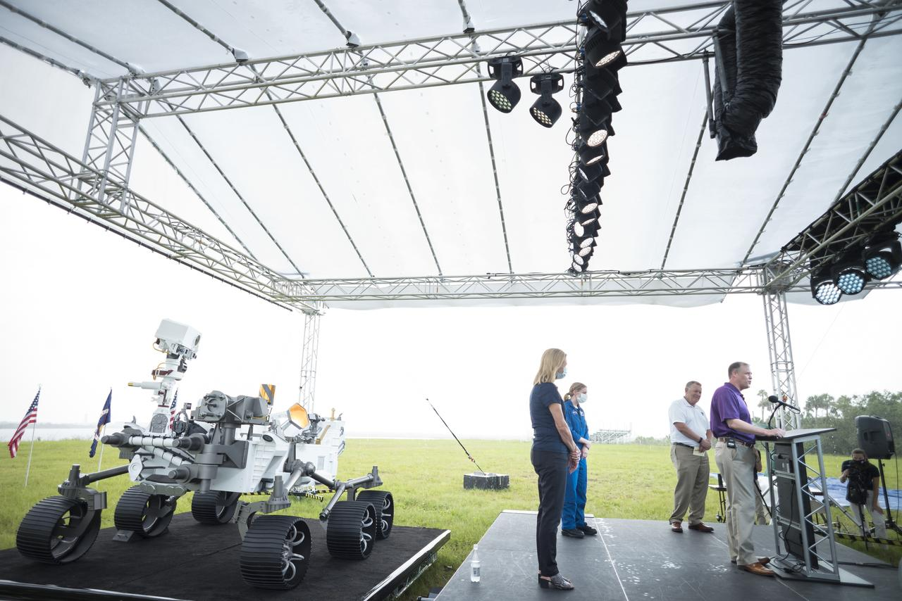

NASA Mars Rovers
Robotic Explorers on the Red Planet
Mission History – Launch and landing timelines
Sojourner (Mars Pathfinder):
Launch: December 4, 1996
Landing: July 4, 1997
Mission End: September 27, 1997
Spirit (Mars Exploration Rover):
Launch: June 10, 2003
Landing: January 4, 2004
Mission End: March 22, 2010
Opportunity (Mars Exploration Rover):
Launch: July 7, 2003
Landing: January 25, 2004
Mission End: June 10, 2018
Curiosity (Mars Science Laboratory):
Launch: November 26, 2011
Landing: August 6, 2012
Status: Still active
Perseverance (Mars 2020):
Launch: July 30, 2020
Landing: February 18, 2021
Status: Still active
